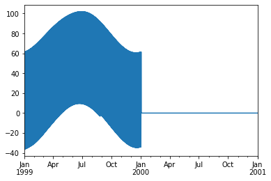
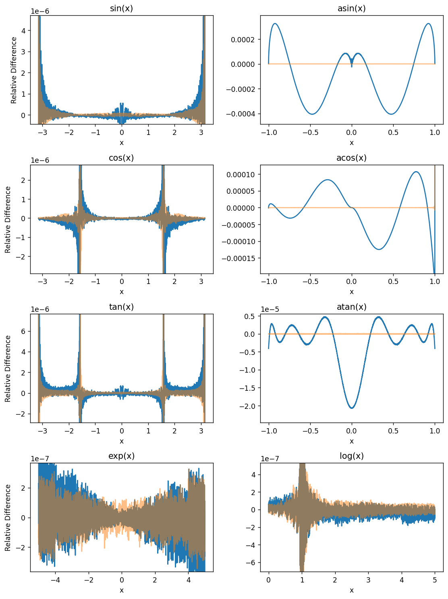
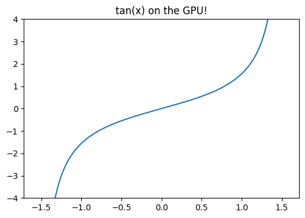

Posted in 2022
PSM3 Pixel Boundaries
- 2022-09-04
The PSM3 provides data with a nominal 2 km spatial resolution, at least according to the NSRDB website. I am interested in what the real underlying data grid actually looks like; this notebook shows that the real grid is defined by angular extent (regular in latitude/longitude), not spatial extent.
Before getting started – querying 5-minute PSM3 data is a bit slow, and likely I’ll want to re-run cells here as I tweak the notebook, so let’s cache the requests to speed things up.

OpenGL Compute Shaders: SPA
- 2022-08-21
This notebook is the third in a series of notebooks about general-purpose GPU (GPGPU) computing using OpenGL’s compute shaders with the goal of an accurate and fast GPU implementation of Reda & Andreas’s Solar Position Algorithm. There’s still some work to do, but what I have is already useful in many contexts and as I get close to the finish line I wanted to do some more rigorous validation in terms of accuracy and runtime speed, using pvlib’s numpy and numba implementations as the baseline.
These comparisons (both error and runtime) will be specific to this particular GPU. I will be interested to see how the results vary across devices…
OpenGL Compute Shaders: Accuracy of Math Functions
- 2022-08-13
This notebook is the second in a series of notebooks about general-purpose GPU (GPGPU) computing using OpenGL’s compute shaders. In working towards a GPU-based implementation of the venerable Solar Position Algorithm (Reda & Andreas 2004) I found that the asin provided by GLSL is not as accurate as I had expected, even considering the reduced precision of 32-bit floats. This notebook examines the (in)accuracy of this GPU’s GLSL implementations of some basic functions useful for scientific programming.
I use the handy helper function from my “first steps” notebook here as well. This encapsulates (1) the boilerplate necessary to shuttle data to and from the GPU and (2) the initialization code on the GPU side needed prior to performing the actual computation of interest.
OpenGL Compute Shaders: First Steps
- 2022-07-30
This notebook is a first exploration into general-purpose GPU (GPGPU) computing using OpenGL’s compute shaders. OpenGL is primarily geared towards rendering graphics and most of its functionality is organized into a sequential rendering pipeline. However, it also includes the ability to run computations outside of the rendering pipeline using so-called “compute shaders”. In essence, a shader is just a little program, written in a C-like language, that executes on the GPU. I am neither qualified nor interested in explaining more than that; if you’re interested then I suggest reading one of the many OpenGL tutorials on the internet. I warn you in advance: it is a big rabbit hole!
If the goal is general-purpose GPU computing, you might wonder why I chose to use OpenGL (geared towards graphics, with GPGPU as an auxiliary function) instead of something like CUDA or OpenCL. I have the naive impression that OpenGL is easier to set up on a new computer than the the more general alternatives are, and a long-term goal of mine is to distribute GPU-accelerated code to the masses, so ease of installation is important. Perhaps someday I’ll change my mind and switch to OpenCL, but for now I experiment with OpenGL.
Speeding up pvfactors
- 2022-04-09
This post is an example of identifying bottlenecks in numerical python code and benchmarking possible alternatives. Specifically, it shows some of the timings I did for the SunPower/pvfactors#140 pull request to the pvfactors bifacial PV simulation package.
The function of interest is pvfactors.engine.PVEngine.run_full_mode, which (as of pvfactors version 1.5.2) doesn’t run as fast as I’d like it to run, especially for large simulations (many PV rows and many timestamps).